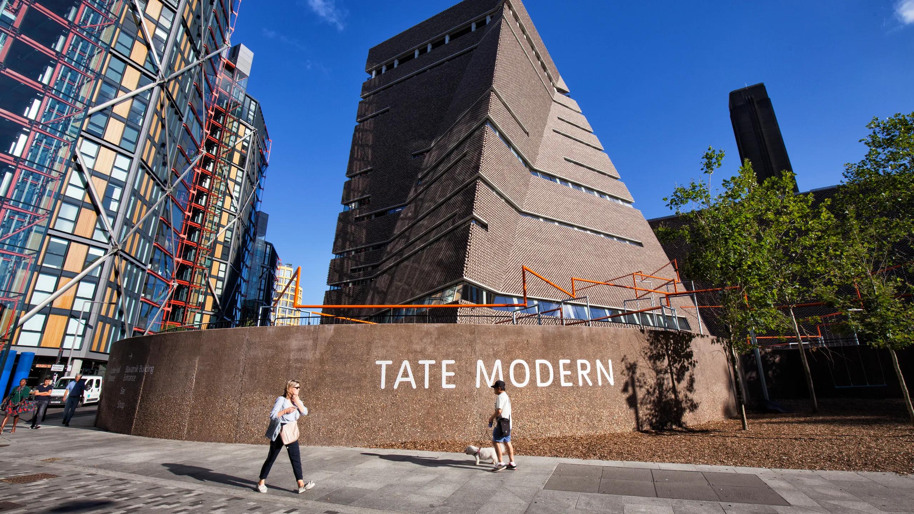
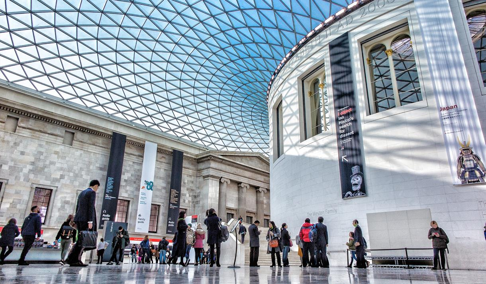
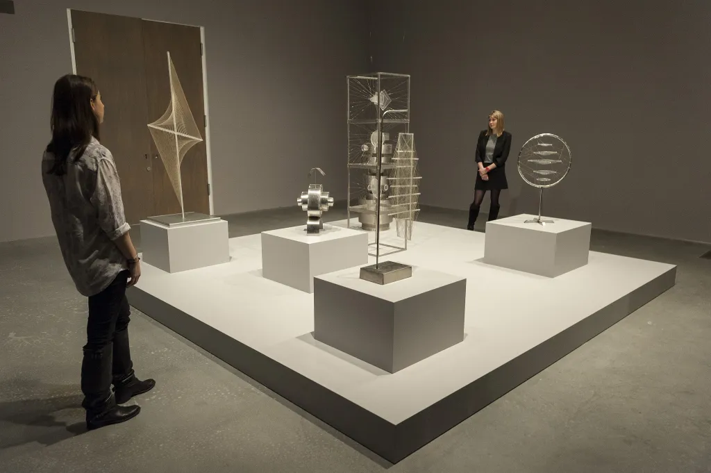
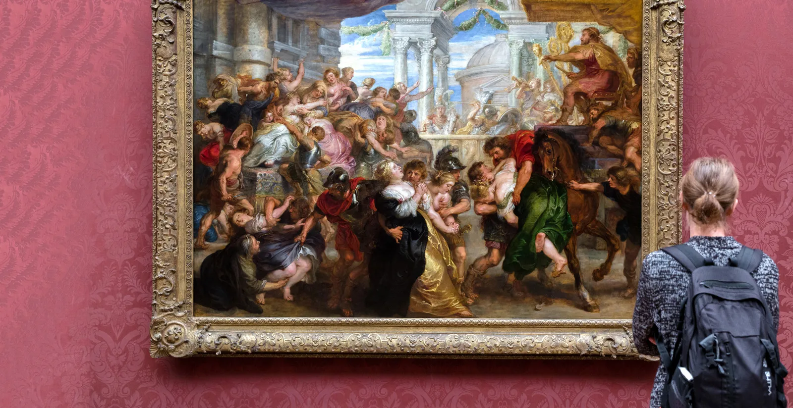

EXPLORE LONDON
GUIDE TO ENJOYING YOUR VISIT ACROSS THE POND
Dive Deep Into London's Culture
 |

|
|---|
London is overflowing in its amount of rich cultural landmarks and experienes. It's heritage shines in its history, art, food, and music. There is something new to discover in each and every corner, and we have compiled a few of some of the most interesting locations to experience such a thing.
The British Museum
Address: Great Russell St, London WC1B 3DG, United Kingdom
The British Museum is home to some of the most priceless pieces displaying history and culture from all over the world. The museum was founded in 1753, and since that time has managed to capture approximately 2 million years worth of history. Some of its collections include the tombs of mummies from ancient Egypt, statues of important Roman and Greek figures, as well as different tools from different continents around the world that help depict their means of operation and evolution. One of the most iconic artifacts in the British Musuem would be the Rosetta stone, which contains writings in multiple different writing styles. This helped historians understand how to read and understand hieroglyphs. This goes to show that the vast amount of history packed inside the musuem could have guests exploring it all day long.
Is The British Museum Free to The Public?
Yes, visitors do not have to pay a fee in order to enjoy the museum. That being said, because the museum can get extremely busy, they must book a timed entry ticket in advance to ensure that they will actually be able to get inside. People can also try and get these tickets when they come straight to the museum, but entry may not be guarenteed.
Are There Places to Eat Inside of the British Museum?
There are a wide range of food spaces in the British Museum that offer both light snacks and full-course meals. Each restaurant also adheres to a wide range of dietary restrictions that vistors may have.
British Musuem Hours
| Weekday | Hours |
|---|---|
| Monday | 10:00am-5:00pm |
| Tuesday | 10:00am-5:00pm |
| Wednesday | 10:00am-5:00pm |
| Thursday | 10:00am-5:00pm |
| Friday | 10:00am-8:30pm |
| Saturday | 10:00am-5:00pm |
| Sunday | 10:00am-5:00pm |
Are There Shops in the British Musuem?
The British Museum has many different gift shops scattered throughout the premises. There, people can souvenirs, books, and replicas of certain items in the musuem.
Can People Take Photos of the Exhibits?
Photography is allowed in most of the exhibits in the museum, but the use of tripods and flash photography are absolutely prohibited. The reason behind this is because flash photography can damage more delicate pieces of artwork. An example of this would be certain pigments of paint which can degrade over time when exposed to the flashes from a camera.
Tate Modern
Address: Bankside, London SE1 9TG, United Kingdom
Tate Modern is an art gallery in London that displays different kinds of traditional and contemporary pieces of art that primarily come from the 20th and 21st centuries. The gallery is recognized for its sleek industrial look, which plays into its contemporary aspects. The types of art that can be found in the museum include paintings, drawings, installations, video art, photographs, and sculptures. Tate Modern has rotating exhibitions so that guests get the chance to experience work from different artists throughout the year. Interactive pieces like some of the installations give tourists the opportunity to take a closer look at the work and thought process of the artist. Tate Modern includes artwork from famous artists such as Pablo Picasso, David Hockney, Andy Warhol, Salvador Dalí, and Henri Matisse.
Is Tate Modern A Nice Place For Families To Visit?
Tate Modern is definitely a place for families with young children to visit and have a good time. Throughout the gallery, there are interactive installations, family workshops, and other creative projects that are tailored towards children.
How Long Do Most People Spend At Tate Modern?
Most people who visit Tate Modern typically spend about 2 to 3 hours exploring specific exhibitions. For those who feel like exploring the entire art gallery, they should be prepared to spend at least half of their day there. Ultimately, it depends on their interests and what they want to get out of their visit.
Tate Modern Hours
| Weekday | Hours |
|---|---|
| Monday | 10:00am-6:00pm |
| Tuesday | 10:00am-6:00pm |
| Wednesday | 10:00am-6:00pm |
| Thursday | 10:00am-6:00pm |
| Friday | 10:00am-6:00pm |
| Saturday | 10:00am-6:00pm |
| Sunday | 10:00am-6:00pm |
Important Note: Admission into Tate Modern is free, but there are certain special exhibits do require paid tickets to view them. Make sure to check with a staff member if there is any confusion.
How Can Visitors Support The Art?
Tate Modern has a gift shop that sells books, prints of the different artwork, and signature souvenir items that are replicas of certain gallery collections. Visitors are also encouraged to donate in order to further fund gallery exhibitions and extracirricular activities.
Can People Take Photos of The Exhibits?
People are allowed to take photographs inside of the gallery's permanent exhibitions. The use of tripods and flash photography are banned because the flashes from the camera can cause certain art installations to deteriorate over time. There are certain private exhibitions where photography of any kind is completely banned, so it is important to check with a staff member to know what is off limits.
The Sherlock Holmes Museum
Address: 221b Baker St, London NW1 6XE, United Kingdom

The Sherlock Holmes Museum was created in honor of the remarkable detective from the fictional novel series written by Sir Arthur Conan Doyle. When visitors enter the museum, it is as if they are transported back in time to London's Victorian era. The musuem gives an insight on Sherlock Holmes's personal life, such as his study room and an area where he kept all of the artifacts that he had collected during his investigations. There are multiple different rooms in the musuem that guests can visit, each one having different wax figures of important characters from the series. Visitors can also enjoy the fact that some of the areas of the musuem are modeled after some of Holme's most famous cases. Ultimately, this musuem is the perefect place for Sherlock Holmes super fans to feel like they are also detectives.
How Long Do Most People Spend At The Museum?
The Sherlock Holmes Musuem is filled with many different artifacts and displays for people to look at and can draw quite a crowd. As a result, most people typically spend about one or two hours at the museum.
Does The Sherlock Holmes Museum Host Special Events?
Yes, throughout the year, the Sherlock Holmes Museum hosts a variety of different temporary exhibits and activities based on a specific theme. The best way to know about these events is to check the official Sherlock Holmes Museum website.
Sherlock Holmes Musuem Ticket Prices
| Category | Price |
|---|---|
| Adult | £16.00 |
| Child | £11.00 |
Sherlock Holmes Musuem Hours
| Weekday | Hours |
|---|---|
| Monday | 9:30am-6:00pm |
| Tuesday | 9:30am-6:00pm |
| Wednesday | 9:30am-6:00pm |
| Thursday | 9:30am-6:00pm |
| Friday | 9:30am-6:00pm |
| Saturday | 9:30am-6:00pm |
| Sunday | 9:30am-6:00pm |
Note: Last entry into the museum is at 5:45pm, and it is closed on December 25th.
Can Souvenirs Be Bought At The Museum?
Yes, the Sherlock Holmes Museum has a gift shop where people can get specific items such as books from the series, a detective kit, special memorabilia, and much more.
The National Gallery
Address: Trafalgar Square, London WC2N 5DN, United Kingdom
The National Gallery is arguably one of the most well known art institutions in London. It holds 700 years of European art, spanning back to its foundation in 1824. The museum includes work from some of the world's greatest artists of all time such as Leonardo Da Vinci, Claude Monet, Rembrandt, and Vincent Van Gogh. The over 2,300 pieces of artwork in the musuem help show the flow of time and artstic evolution in style, technique, and overall themes. The pieces range from medieval times all the way to more modern and contemporary times. The National Gallery hosts a number of temporary exhibits throughout the year, which gives art enthusiasts with different art preferences to see something they are interested in, or introduce them to something entirely brand new.
How Much is Admission Into The National Gallery?
Entry into the National Gallery is completely free, which means visitors have the freedom to explore all of the permanent exhibits the musuem has to offer without needing to purchase a ticket. However, there are certain temporary exhibits that may require some kind of entrance fee, so it always important to check with a staff member just to be sure.
Is Photography Allowed Inside The National Gallery?
Photography is allowed in most areas of the National Gallery, but flash photography is strictly forbidden as it can cause the artwork to deteriorate over time. There are certain special exhibits where photography of any kind might be completely banned, so it is important to check for any signs or ask a staff member.
Is The National Gallery a Good Place To Bring Children?
Yes, the National Gallery is the perfect place for families to bring their children. There are many different interactive activities such as workshops and family trails. Additionally, there is a area known as the Family Room that has plenty of activities for younger children to enjoy.
National Gallery Hours
| Weekday | Hours |
|---|---|
| Monday | 10:00am-6:00pm |
| Tuesday | 10:00am-6:00pm |
| Wednesday | 10:00am-6:00pm |
| Thursday | 10:00am-6:00pm |
| Friday | 10:00am-9:00pm |
| Saturday | 10:00am-6:00pm |
| Sunday | 10:00am-6:00pm |
How Long Do Visitors Spend At the National Gallery?
The amount of time that a visitor spends at the National Gallery may simply depend on the level of interest they have in art. For instance, casual enjoyers might spend no more than an hour or two cruising throughout the museum. However, those with a much deeper and profound love and interest in art may end up spending several hours deeply analyzing each exhibit.